Research Profile
I am an immunology researcher who graduated with a Master's degree from Peking University in June 2026, with interdisciplinary experience in tumour immunology, cancer immunotherapy and computational biology. My research has centred on how tumours shape T-cell responses, combining functional genetic approaches with analysis of bulk and single-cell transcriptomic data and experimental validation in mouse tumour models.
I have experience in single-cell RNA-seq and TCR-seq analysis, multi-omics integration, R/Python-based data analysis, flow cytometry, and collaborative projects in CRISPR-based functional screening and CAR-T cell engineering. I am particularly interested in discovering how tumours suppress CD8+ T-cell responses to evade immune destruction and resist immunotherapy, and in translating those mechanisms into more effective T-cell-based therapies.
Research Experience
Tumour–Stromal Interactions in Pancreatic Cancer
Master's Research · Peking University
- Characterised CAF heterogeneity and its role in shaping anti-tumour immune responses and the tumour microenvironment.
- Integrated bulk RNA-seq, single-cell and multi-omics data to link stromal markers to immune infiltration and clinical outcome.
- Validated findings in mouse pancreatic tumour models (tumour growth, immune infiltration).
CRISPR Screening & CAR-T Cell Engineering
Collaborative Research Project
- In-vitro CRISPR functional screening to identify genes that modulate T-cell activation and tumour-cell killing, with the aim of overcoming suppressive signals.
- Handled primary mouse and human CD8+ T cells — isolation, activation, lentiviral transduction and CAR-T expansion.
- Assessed anti-tumour activity of gene-knockout CAR-T cells, including in vivo.
Treg Biology & Tissue Repair
Research Experience in Immunology
- Studied Foxp3+ regulatory T cells in tissue repair and regeneration.
- Flow cytometry, PCR/qPCR and molecular biology support.
- Built a foundation in T-cell regulation and context-dependent immune function.
Additional Collaborative Research
Multi-omics & spatial transcriptomics
- Single-cell and spatial analysis, proteomics and inflammatory-disease multi-omics (adenoid cystic carcinoma atlas, osteosarcoma exosome proteomics).
- Co-authored two publications in Advanced Science.
Fit to the Lab: T-cell Immunity & Immunosuppression in Cancer
My long-standing interest is in why the immune system, which can normally recognise and kill cancer cells, is often shut down inside tumours. Checkpoint inhibitors against PD-1 and CTLA-4 have been a major step forward, but most patients do not durably respond, and I want to understand the mechanisms behind this so that better therapies can be designed. My training has prepared me for this by combining mechanistic T-cell immunology with CRISPR-based functional genetics and single-cell genomics.
I have used CRISPR functional screening in primary T cells to identify genes that restrain anti-tumour T-cell function — the same kind of approach that can uncover new checkpoints and regulators of T-cell dysfunction. My work with CAR-T cell engineering and tumour-killing assays has given me direct experience measuring T-cell effector function. In addition, my analysis of single-cell RNA-seq and TCR-seq data has taught me to identify T-cell states, follow clonal dynamics, and compare the transcriptional programmes of functional and dysfunctional CD8+ T cells within tumours.
I am drawn to the translational side of this work as well — developing biologic, cellular and molecular therapies that help patients with advanced disease or reduce the chance of recurrence after treatment. I would like to contribute both computational and experimental skills to defining the molecular circuits of T-cell suppression, and to help turn those findings into new treatments.
Honors & Awards

Award of Scientific Research
Peking University
Award of Academic Excellence
Peking University

Excellent Graduate
Peking University
Technical Skills
Computational
- R, Python, Linux/Bash and high-performance computing
- Single-cell RNA-seq and TCR-seq analysis (Scanpy/Seurat), immune-repertoire analysis
- Bulk RNA-seq and multi-omics integration (genomics, transcriptomics, ATAC-seq, proteomics)
- Cell–cell communication (CellChat, NicheNet, CellPhoneDB / Squidpy ligrec, SecAct)
- Spatial analysis (Squidpy/Scanpy: Visium, Slide-seqV2, seqFISH, MERFISH, CosMx, MIBI-TOF, 4i, Nanostring)
- AlphaFold3-based protein–interaction screening
Experimental
- Primary T-cell isolation, activation, transduction and expansion
- CAR-T cell engineering and tumour-killing / functional T-cell assays
- Flow cytometry, high-parameter spectral analysis and FACS
- Orthotopic and subcutaneous mouse tumour models
- Recombinant Fc fusion protein design and purification
- Immunofluorescence, immunohistochemistry, Western blotting
- Organoid culture; primary tissue processing
Scientific communication
- Scientific figure preparation with Adobe Illustrator and Photoshop
- Literature summary and graphical abstract design
Selected Computational Results
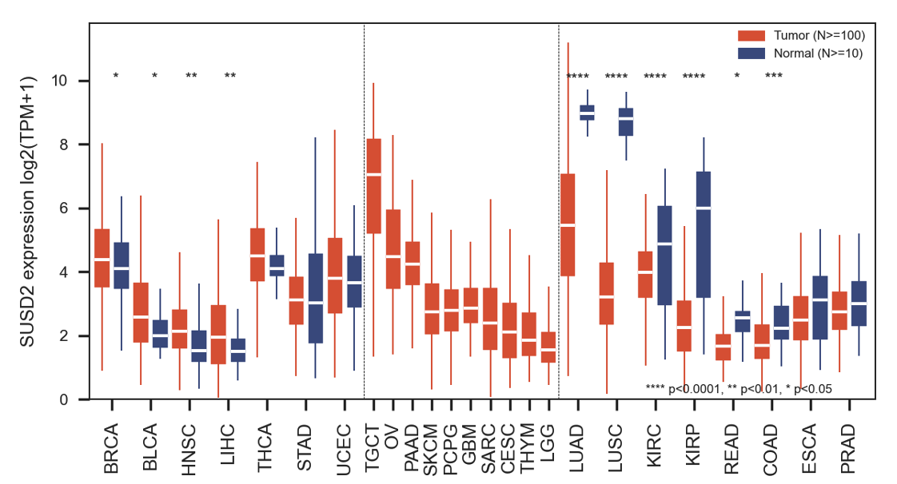
Pan-cancer expression analysis
Cross-tumour differential expression to characterise candidate gene regulation and tumour-associated patterns.

Immune–stromal associations
Correlation analysis linking stromal-associated genes with immune features to generate mechanistic hypotheses.

TCGA expression differences
Expression comparison of candidate genes across tumour and normal tissue.
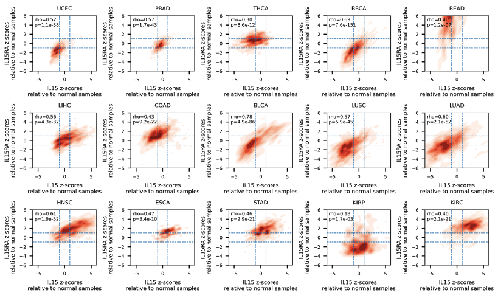
Pan-cancer expression correlation
Cross-tumour gene–gene co-expression relationships.
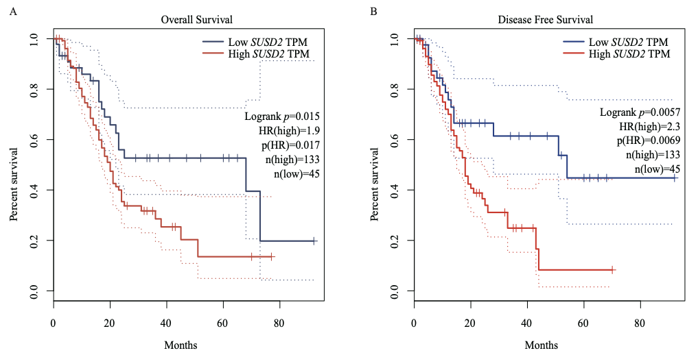
Survival analysis
Association between candidate gene expression and patient survival.
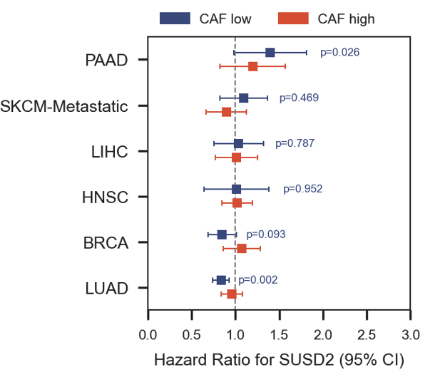
Pancreatic cancer prognosis
Kaplan–Meier and prognostic validation to assess clinical relevance.

Gene-plasticity algorithm
A plasticity-based framework for rapidly identifying novel CAF subtypes and prioritising candidates such as SUSD2.

Weighted gene co-expression networks
Network analysis to identify gene modules associated with clinical or biological traits.

Co-expression / mutual exclusivity
Screen for genes showing co-expression or mutually exclusive expression patterns.
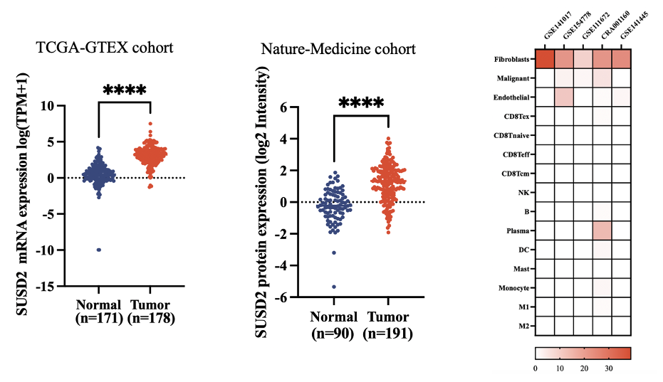
Multi-omics analysis
Integration of multiple omics layers to resolve gene relationships.
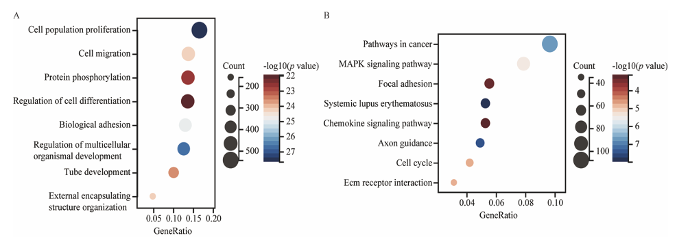
GO / KEGG enrichment
Functional annotation of gene lists via Gene Ontology and KEGG pathways.

Venn gene comparison
Overlap analysis across gene sets to identify shared and unique candidates.
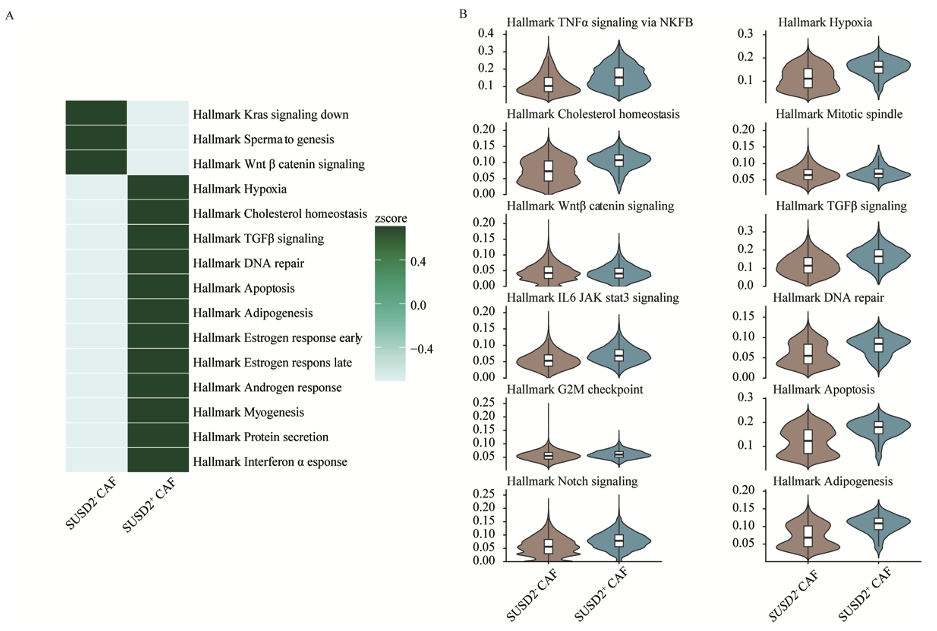
Hallmark enrichment
Hallmark gene-set enrichment to characterise biological states.
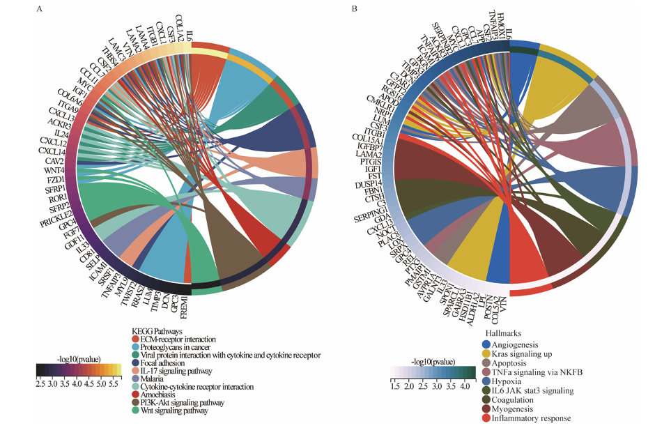
Enrichment analysis
Additional enrichment results supporting the candidate gene story.

GEP analysis
Gene-expression-program analysis to capture cellular programs in bulk or single-cell data.
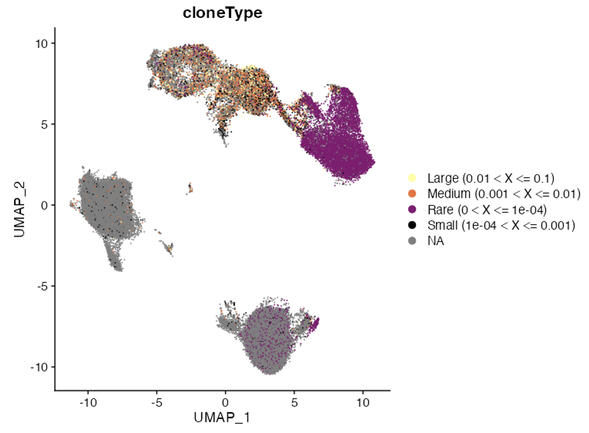
TCR repertoire analysis
Single-cell TCR-seq analysis of T-cell clonotypes, clonal expansion and repertoire diversity.
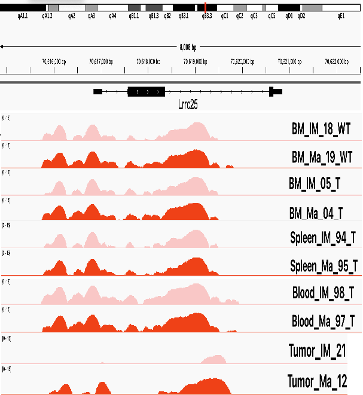
Chromatin accessibility
ATAC-seq analysis to relate regulatory elements to candidate genes.

Large-scale public data mining
Integration and mining of large public transcriptomic datasets.

ACC tumour analysis
Overview schematic of an adenoid cystic carcinoma analysis workflow.
Selected Experimental Results

CRISPR/Cas9 Susd2 knockout mouse
Generation of a Susd2 conditional knockout to test CAF function.
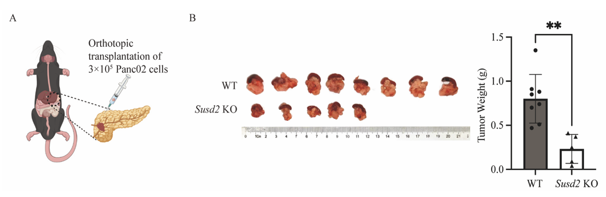
Pancreatic cancer mouse model
Orthotopic tumour modelling to assess the effect of Susd2 deletion.

Collagen deposition (VG staining)
Van Gieson staining showing reduced collagen fibre deposition upon Susd2 deletion.

Immunofluorescence
In situ analysis of immune infiltration and stromal markers.

CD8+ T-cell analysis
Quantification of CD8+ T-cell infiltration by flow cytometry.

MHC-II+ macrophage analysis
Quantification of MHC-II+ macrophages in the tumour microenvironment.
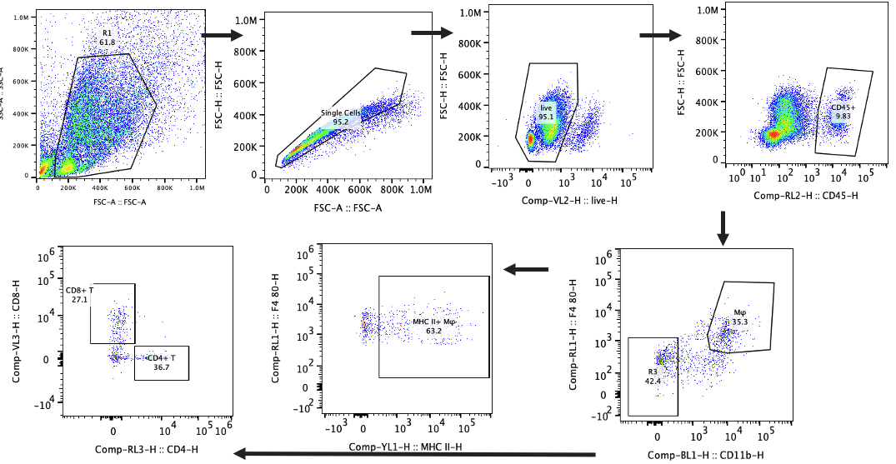
Gating strategy
Representative gating scheme used to define stromal and immune populations.
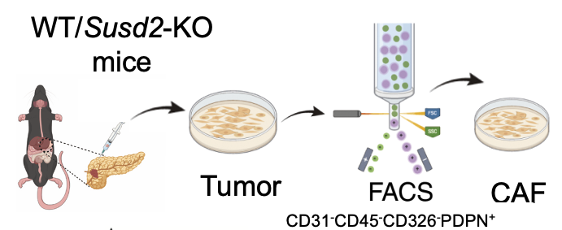
Cell sorting
Isolation of CAFs using a PDPN+CD31−EpCAM−CD45− strategy.
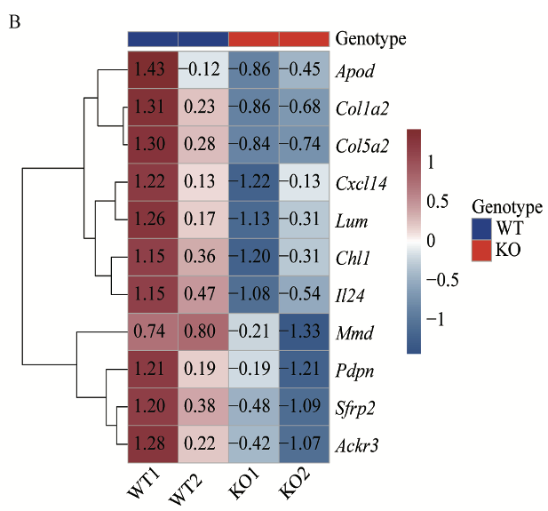
Sorted population RNA-seq
Transcriptomics of flow-sorted cell populations.
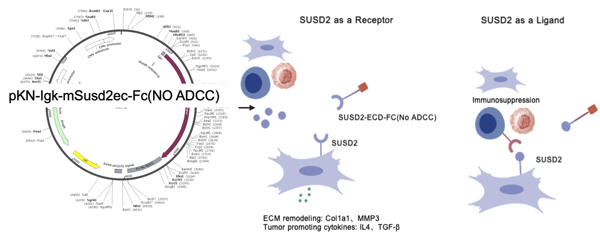
Fc fusion protein
Design of Fc fusion proteins to block ligand–receptor interactions.
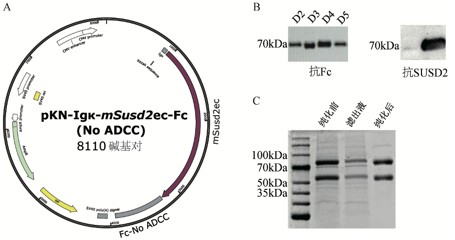
Fc protein purification
Expression and purification of recombinant Fc fusion proteins.

Tumour Fc fusion injection
Administration of engineered proteins in tumour models.

Organoid culture
Human corneal epithelial organoids cultured from corneal rim tissue (collaboration, under review).

Literature summary figure
Summary figure prepared with Adobe Illustrator and Photoshop to synthesise the literature.
Spatial & Single-cell Multi-omics
I have extensive computational experience analysing public spatial transcriptomics and spatial imaging datasets — including MERFISH and CosMx — using Squidpy and Scanpy. My experience focuses on downstream computational analysis rather than operating the experimental platforms themselves.
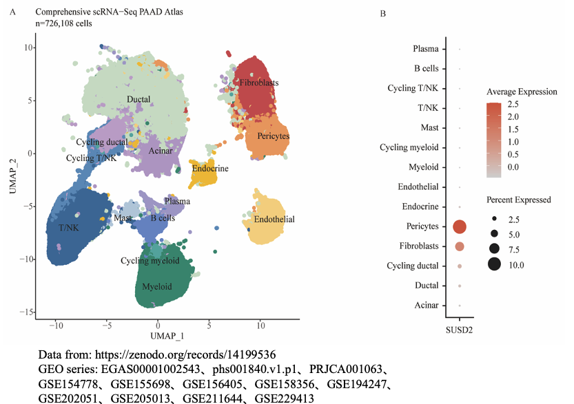
UMAP clustering
Single-cell clustering and dimensionality reduction.

Cell–cell communication (I)
Ligand–receptor interaction analysis to infer intercellular signalling.

Cell–cell communication (II)
Additional communication analysis across cell states.

Marker expression dotplot
Dotplot of marker gene expression across clusters.
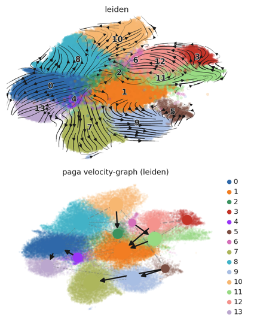
Pseudotime analysis
Trajectory inference of cell-state transitions.
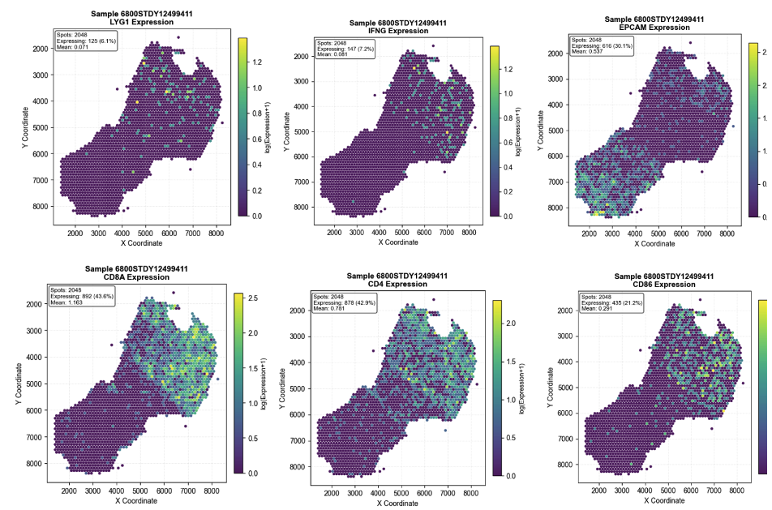
Spatial expression analysis
Spatial distribution of gene expression in tissue.

Cell proportion analysis
Deconvolution of cell-type proportions across samples.

Cytokine expression
Expression profiling of cytokine-related genes.
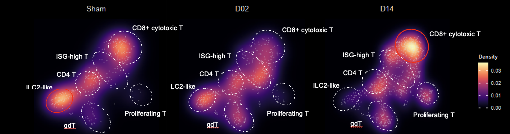
Cell density analysis
Spatial quantification of single-cell density across the tissue.
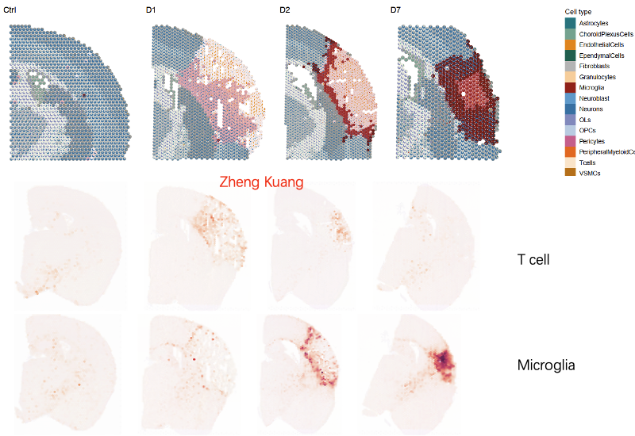
Spatial cell annotation
Cell-type annotation mapped onto spatial transcriptomics coordinates.

Spatial cell-type mapping
Spatial layout of annotated cell types in imaging mass cytometry data.
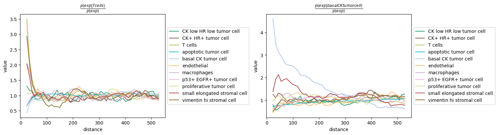
Spatial co-occurrence
Quantification of cluster co-occurrence as a function of distance.

Neighbourhood enrichment
Permutation-based enrichment of spatial cell-type proximity.
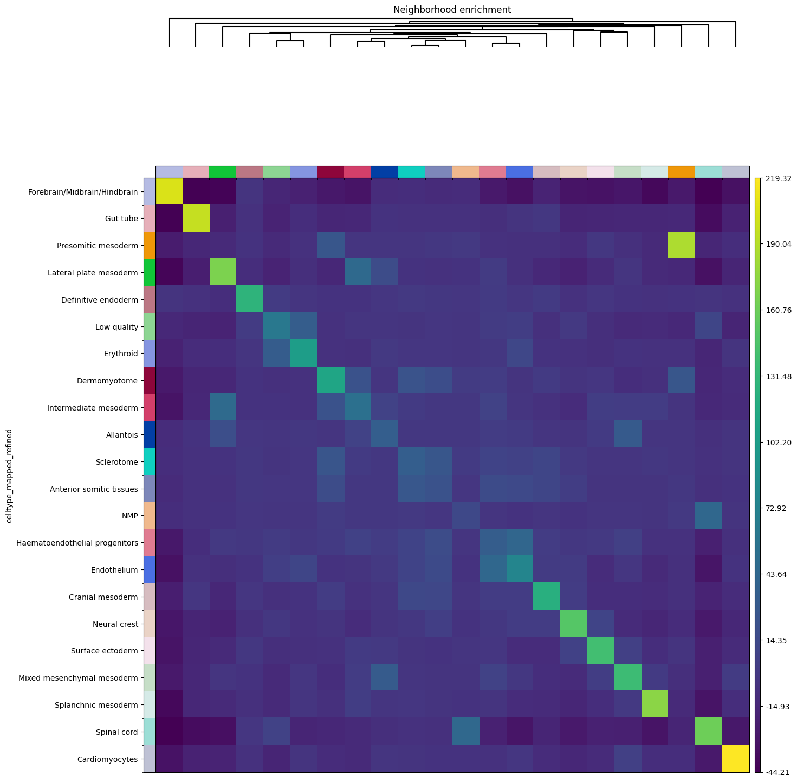
seqFISH spatial enrichment
Neighbourhood enrichment across seqFISH cell-type annotations.
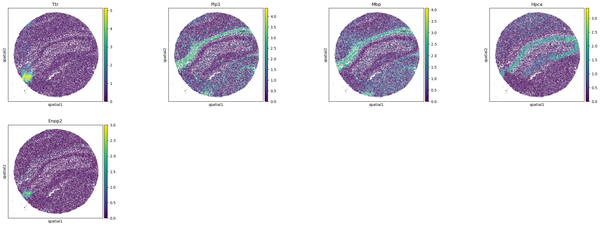
Spatially variable genes
Identification of spatially structured genes via Moran's I autocorrelation.
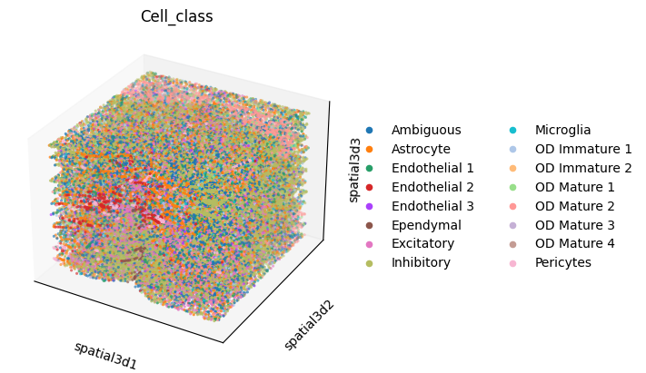
3D spatial reconstruction
Three-dimensional spatial analysis of consecutive MERFISH sections.
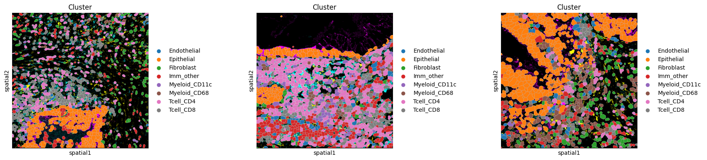
Multiplexed proteomics
Spatial segmentation of single-cell metabolic profiles in MIBI-TOF data.

Iterative immunofluorescence
Spatial analysis of 4i imaging data.

Single-cell UMAP embedding
UMAP projection of seqFISH cells annotated across 22 cell types.
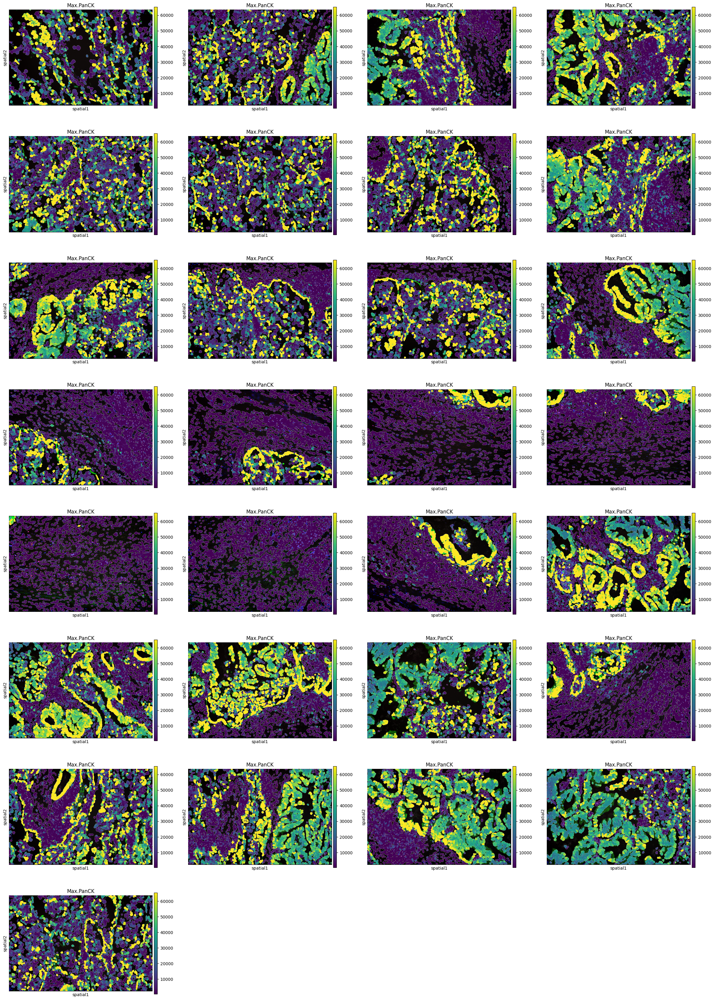
Spatial segmentation
Cell segmentation on Nanostring CosMx-style spatial data.
Contact
For research enquiries or potential collaborations, please contact me by email.